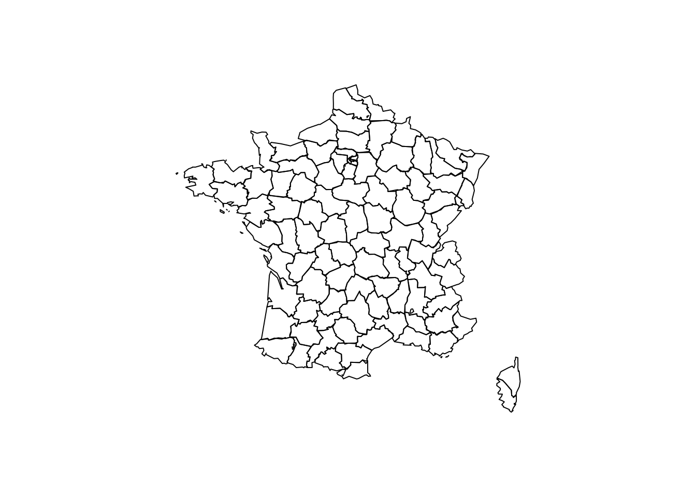
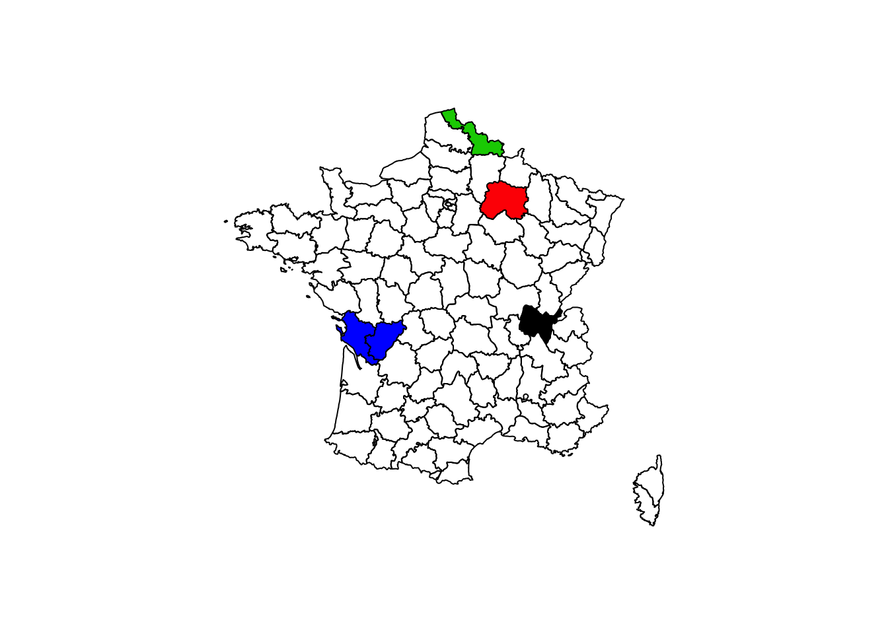
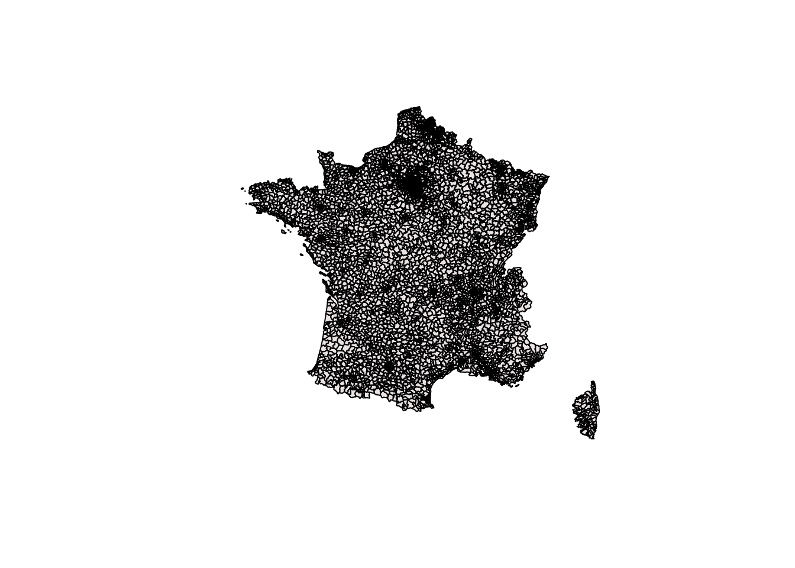
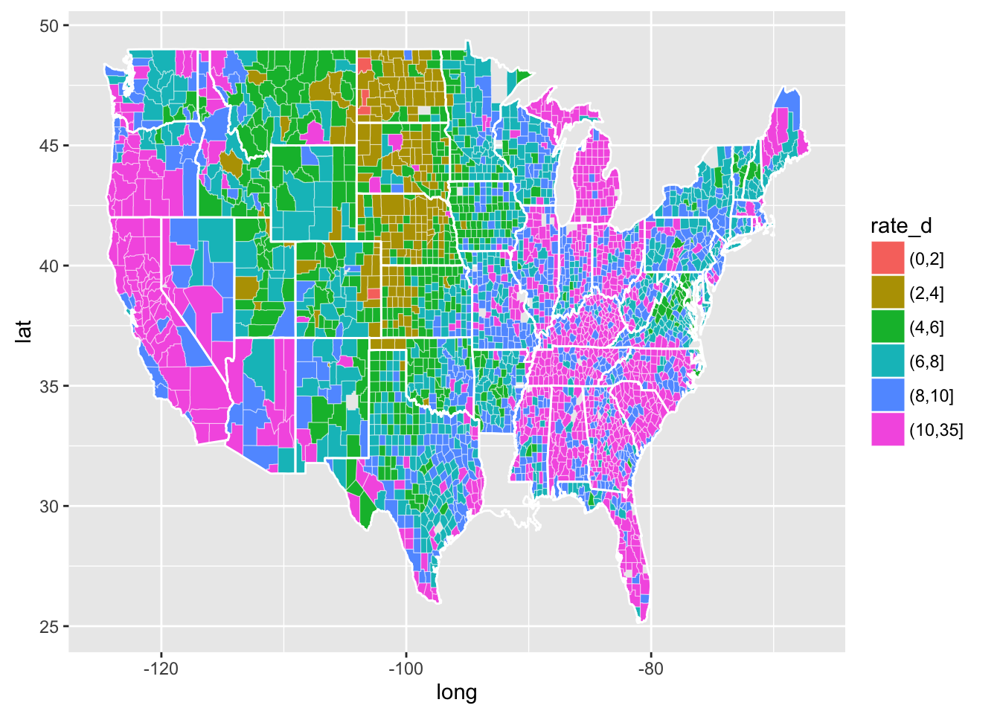
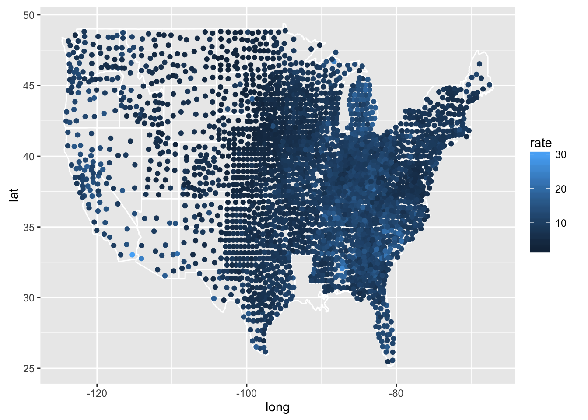

Une carte choroplèthe (du grec χώρος : « zone/région » et πληθαίν : « multiple ») est une carte thématique où les régions sont colorées ou remplies d’un motif qui montre une mesure statistique, tels la densité de population ou le revenu par habitant. Ce type de carte facilite la comparaison d’une mesure statistique d’une région à l’autre ou montre la variabilité de celle-ci pour une région donnée. (Wikipédia)
Exercices en utilisant les différents packages présentés ci-dessous,
mapsDans le package maps, on a
library(maps)
france<-map(database="france")
Il est possible de mettre des couleurs pour les différents départements:
dep<-c("Ain","Marne","Nord","Charente")
col<-c(1,2,3,4)
match <- match.map(france,dep)
color <- col[match]
map(database="france", fill=TRUE, col=color)
Vous trouver des fonds de carte sur internet, par exemple, pour les codes postaux, vous pouvez les trouver sur le site suivant : Fond de carte des codes postaux
library (rgdal)
CP=readOGR("data/codes_postaux/codes_postaux.TAB",layer="codes_postaux")## OGR data source with driver: MapInfo File
## Source: "data/codes_postaux/codes_postaux.TAB", layer: "codes_postaux"
## with 6048 features
## It has 6 fieldsCP2=readOGR("data/codes_postaux/codes_postaux_region.shp",layer="codes_postaux_region")## OGR data source with driver: ESRI Shapefile
## Source: "data/codes_postaux/codes_postaux_region.shp", layer: "codes_postaux_region"
## with 6048 features
## It has 6 fieldsplot(CP, col="snow2")
J’ai trouvé un code exemple ici pour la création carte choroplèthe:
library(ggplot2)
library(maps)
unemp <- read.csv("data/unemployment09.csv", header = F, stringsAsFactors = F)
head(unemp)## V1 V2 V3 V4 V5 V6 V7 V8 V9
## 1 CN010010 1 1 Autauga County, AL 2009 23,288 21,025 2,263 9.7
## 2 PA011000 1 3 Baldwin County, AL 2009 81,706 74,238 7,468 9.1
## 3 CN010050 1 5 Barbour County, AL 2009 9,703 8,401 1,302 13.4
## 4 CN010070 1 7 Bibb County, AL 2009 8,475 7,453 1,022 12.1
## 5 CN010090 1 9 Blount County, AL 2009 25,306 22,789 2,517 9.9
## 6 CN010110 1 11 Bullock County, AL 2009 3,527 2,948 579 16.4names(unemp) <- c("id", "state_fips", "county_fips", "name", "year",
"?", "?", "?", "rate")
unemp$county <- tolower(gsub(" County, [A-Z]{2}", "", unemp$name))
unemp$state <- gsub("^.*([A-Z]{2}).*$", "\\1", unemp$name)
county_df <- map_data("county")
names(county_df) <- c("long", "lat", "group", "order", "state_name", "county")
county_df$state <- state.abb[match(county_df$state_name, tolower(state.name))]
county_df$state_name <- NULL
state_df <- map_data("state")
# Combine together
choropleth <- merge(county_df, unemp, by = c("state", "county"))
choropleth <- choropleth[order(choropleth$order), ]
# Discretise rate to use with Brewer colour scheme - many options here
# choropleth$rate_d <- cut_number(choropleth$rate, 5)
# choropleth$rate_d <- cut_interval(choropleth$rate, 5)
# Nathan's choice is a little odd:
choropleth$rate_d <- cut(choropleth$rate, breaks = c(seq(0, 10, by = 2), 35))
# Once you have the data in the right format, recreating the plot is straight
# forward.
head(choropleth)## state county long lat group order id state_fips
## 11 AL autauga -86.50517 32.34920 1 1 CN010010 1
## 30 AL autauga -86.53382 32.35493 1 2 CN010010 1
## 10 AL autauga -86.54527 32.36639 1 3 CN010010 1
## 25 AL autauga -86.55673 32.37785 1 4 CN010010 1
## 51 AL autauga -86.57966 32.38357 1 5 CN010010 1
## 39 AL autauga -86.59111 32.37785 1 6 CN010010 1
## county_fips name year ? ?.1 ?.2 rate
## 11 1 Autauga County, AL 2009 23,288 21,025 2,263 9.7
## 30 1 Autauga County, AL 2009 23,288 21,025 2,263 9.7
## 10 1 Autauga County, AL 2009 23,288 21,025 2,263 9.7
## 25 1 Autauga County, AL 2009 23,288 21,025 2,263 9.7
## 51 1 Autauga County, AL 2009 23,288 21,025 2,263 9.7
## 39 1 Autauga County, AL 2009 23,288 21,025 2,263 9.7
## rate_d
## 11 (8,10]
## 30 (8,10]
## 10 (8,10]
## 25 (8,10]
## 51 (8,10]
## 39 (8,10]chorogg=ggplot(choropleth, aes(long, lat, group = group)) +
geom_polygon(aes(fill = rate_d), colour = alpha("white", 1/2), size = 0.2) +
geom_polygon(data = state_df, colour = "white", fill = NA)
chorogg
Le package plotly permet également de créer une carte choroplèthe. Il faut mettre à jour le package si le message d’erreur indique que la fonction plot_geo n’existe pas.
library(plotly)
df <- read.csv("https://raw.githubusercontent.com/plotly/datasets/master/2011_us_ag_exports.csv")
df$hover <- with(df, paste(state, '<br>', "Beef", beef, "Dairy", dairy, "<br>",
"Fruits", total.fruits, "Veggies", total.veggies,
"<br>", "Wheat", wheat, "Corn", corn))
# give state boundaries a white border
l <- list(color = toRGB("white"), width = 2)
# specify some map projection/options
g <- list(
scope = 'usa',
projection = list(type = 'albers usa'),
showlakes = TRUE,
lakecolor = toRGB('white')
)
plot_geo(df, locationmode = 'USA-states') %>%
add_trace(
z = ~total.exports, text = ~hover, locations = ~code,
color = ~total.exports, colors = 'Purples'
) %>%
colorbar(title = "Millions USD") %>%
layout(
title = '2011 US Agriculture Exports by State<br>(Hover for breakdown)',
geo = g
)Sur la page présentée, un dot map est présenté:
library(dplyr)
library(plyr)
mid_range <- function(x) mean(range(x, na.rm = TRUE))
centres <- ddply(county_df, c("state", "county"), summarise,
lat = mid_range(lat),
long = mid_range(long)
)
bubbles <- merge(centres, unemp, by = c("state", "county"))
bgg=ggplot(bubbles, aes(long, lat)) +
geom_polygon(aes(group = group), data = state_df,
colour = "white", fill = NA) +
geom_point(aes(color = rate))
bgg
Exercice
ggplotly.Avec une visualisation en 3D, il est possible de représenter certaines informations dans l’espace.
Visualisation créée avec threejs
Visualisation créée avec plotly
Représenter la population par code postal sur une carte en 3D. Vous devez d’abord trouver les centres GPS des codes postaux.
Pour créer une carte interactive, on va utiliser le package leaflet.
Dans un premier, suivez le tutoriel sur leaflet pour R.
Il est possible de créer une carte choroplèthe avec leaflet
library(leaflet)
leaflet(data = france) %>% addTiles() %>%
addPolygons(fillColor = topo.colors(10, alpha = NULL), stroke = FALSE)Il est possible de trouver plus de styles de cartes
leaflet(data = france) %>% addProviderTiles("Stamen.Toner") %>%
addPolygons(fillColor = topo.colors(10, alpha = NULL), stroke = FALSE)Un exemple de heatmap, mais il semble que le package n’est plus maintenu.
library(ggmap)
library(rjson)
library(rMaps)
library(rCharts)
data(crime, package = 'ggmap')
crime_dat = ddply(crime, .(lat, lon), summarise, count = length(address))
crime_dat = toJSONArray2(na.omit(crime_dat), json = F, names = F)
cat(rjson::toJSON(crime_dat[1:2]))
L2 <- Leaflet$new()
L2$setView(c(29.7632836, -95.3632715), 10)
L2$tileLayer(provider = "OpenStreetMap.DE")
L2
# Add leaflet-heat plugin. Thanks to Vladimir Agafonkin
L2$addAssets(jshead = c(
"http://leaflet.github.io/Leaflet.heat/dist/leaflet-heat.js"
))
# Add javascript to modify underlying chart
L2$setTemplate(afterScript = sprintf("
<script>
var addressPoints = %s
var heat = L.heatLayer(addressPoints).addTo(map)
</script>
", rjson::toJSON(crime_dat)
))
L2Dans la base des accidents, ceratines adresses ne possèdent pas de coordonnées GSP, pour cela, il faut géocoder les adresses. Le package ggmap permet de le faire.
Exercice
Géocoder quelques adresses à Paris.
Grâce à des packages, il est facile de créer des cartes choroplèthes ou des cartes interactives. Cependant, il est possible d’approfondir l’étude géographique de certaines caractéristiques.
Pour un réseau d’agents généraux, il est possible d’étudier leur densité de réparition, par rapport aux superficies, ou par rapports aux populations aux alentours.
Cet exercice permet de mieux connaître les distances entre les points.
Ce petit projet permet d’étudier l’implantation de Quick. L’étude relative peut être poussée, et d’autres paramètres peuvent être pris en compte (population, revenus, développement de tourisme, etc.) Pour l’étude de concentration, le critère n’est pas pertinent selon ce qui est fait dans l’exercice précédent.
Copyright © 2016 DatavISUP